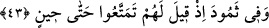

kalpleriniz ölmüştür, her ne kadar dürtsem de uyanmıyor.”
Mevlânâ Câmî şöyle demiştir:
Ey beden beşiğinde küçük bir çocuk gibi,
Gaflet uykusu elinde esir kalmış.
Ecel seni uyandırmadan önce,
Eğer ölü değilsen başını kaldır.
Muhammed b. Hâmid, Ahmed b. Hadraveyh’in doksan beş yaşında rûhunu teslim
ederken yanında oturuyordu. Şâhid olduğu hâli şöyle anlatıyor: “O bazen gözlerini açıp
bana bakıyordu. Ben ise onun gözünün îmanla mı yoksa günahkâr olarak mı bana
açıldığını bilemiyordum.”
Half b. Sâlim’den bildirildiğine göre o, Ebû Ali b. el-Mâtûh’a, “Senin evin neresi?”
diye sormuş, o da: “Benim evim, aziz ile zelil olan insanın eşit kılındığı yerdir”
demiştir. Half ona bu yerin neresi olduğunu sorunca, oranın mezarlıklar olduğunu
belirtmiştir. Bunun üzerine Half ona, “Gecenin karanlığından ürkmez misin?” demiş, o,
“Ben kabirlerin karanlığı ve ıssızlığının, gece karanlığından daha şiddetli olduğunu
düşünüyorum” diye cevap vermişti. Half, “Peki! Söyler misin? Kabirlerden daha zor bir
yer sizce var mıdır?” diye sorunca o, “Tabii vardır. Bu da, insana kabir azabını
unutturacak âhiret korkusudur” diye karşılık vermiştir.
Bir mezar kitabesinde şu yazıya rastlanılmıştır:
Allah mahlûkatı diriltinceye dek seni bekleyeceğim ama sen yakınımda olduğun
halde sana kavuşma ümidinin olmadığını biliyorum.
Ey sevgilim! Sen çürüdüğün gibi gündüz ve gecelerin sıkıntıları da artarak beni yok
olmaya sürüklüyor.
43. Semûd kavminde de (ibretler vardır). Onlara: Bir süreye kadar faydalanın,
denmişti.
“Semûd”; yâni Sâlih (a.s.)’ın kavmi Semûd’da da ibret alınacak şeyler vardır. Veya
onlarda da ibretler bıraktık. “Onlara: Bir süreye kadar” azabın inmesine kadar “safâ
sürün” dünya hayatından faydalanın “denmişti.”
Bu süre, çarşamba, perşembe ve cuma gününün sonuna kadar olan üç günlük
müddettir. Zira onlar çarşamba günü deveyi boğazlamış, cumartesi günü de Cibrîl’in
korkunç çığlığı ile helâk edilmişlerdir. Bu âyet “Siz üç gün boyunca evinizden
faydalanın bakalım” (Hud 11/65) âyetiyle de tefsir edilmiştir.
Rivâyete göre Sâlih (a.s.) onlara: “Sizin yüzleriniz yarın sarıya, ertesi gün kırmızıya